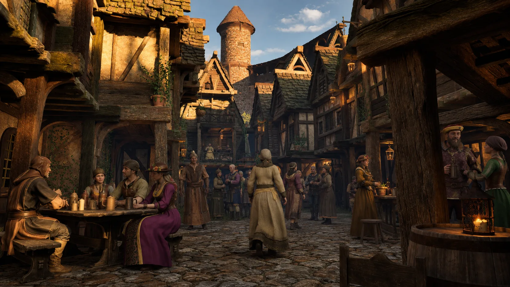
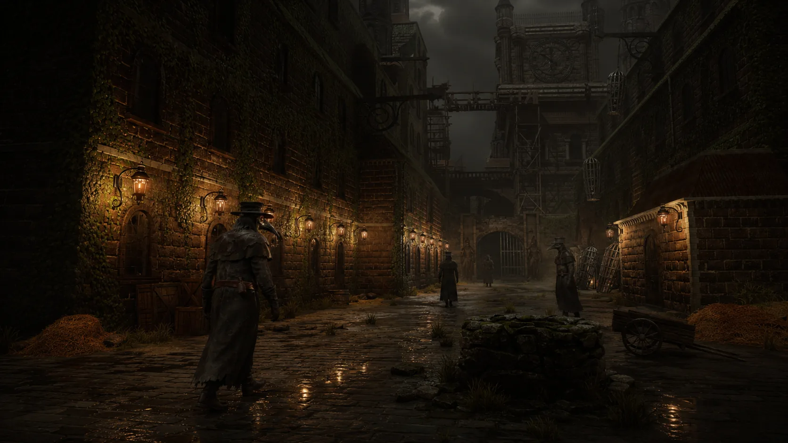
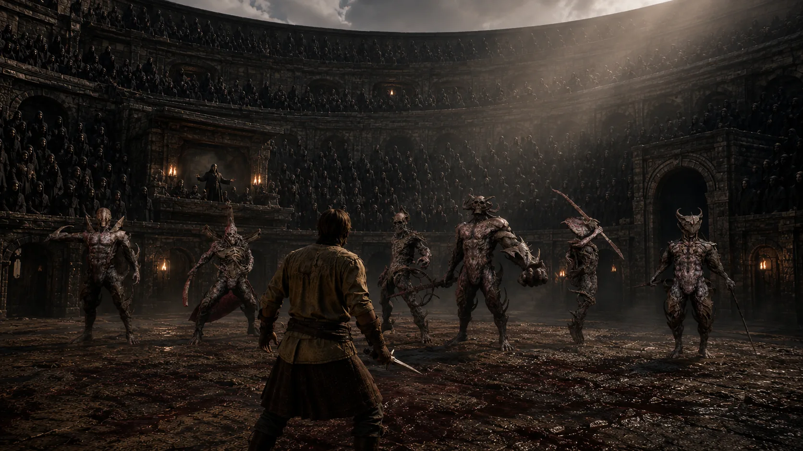
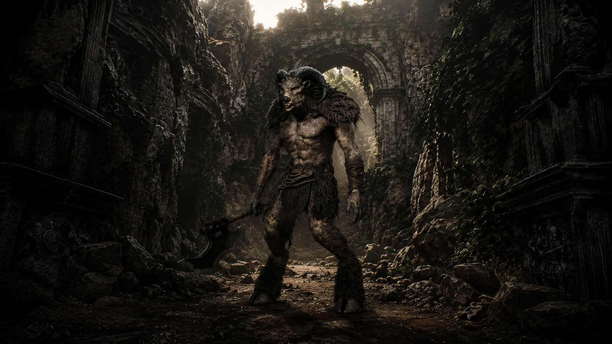

A VOICE IN THE DARK
The Cursed Doll
A small companion with unsettling answers. She offers guidance, training and a way to travel—but trust is yours to give.
WORLD & STORY
Troubled villages, divided loyalties and people with lives beyond your own. Discover a realm where trust is earned one encounter at a time.

Concept artTHE OLD HOUSE
A cage beneath an old house. A voice with answers of her own. Follow the Doll’s guidance into a village gathering, where even your first response can leave a lasting impression.
 Concept art
Concept artTHE HIDDEN VILLAGE
A hidden community led by the Veyne sisters. Earn their trust, meet their withdrawn father and follow a family’s story from the quiet village to the heart of the Kingdom.

Concept artTHE KINGDOM
Above the crowded streets, wealth and influence gather around the Crown. Below, ordinary people live with taxes, curfews and harsh justice—and the Thieves keep a society of their own.

Concept artCULT VILLAGE & SIXFOLD CRUCIBLE
Ritual and sacrifice bind the Cult’s followers together. Seek answers among them, then face the ordeal waiting inside the Sixfold Crucible.

Concept artIRON VOW HOLD & WITCH TERRITORIES
The road reaches beyond the Kingdom: to the Templars of Iron Vow Hold, the Witch territories and the Plague Doctors who dwell there. Every place has its own loyalties.
WHO WILL YOU TRUST?
They have their own loyalties, grief and ambitions. Your place in their stories is still unwritten.
A VOICE IN THE DARK
A small companion with unsettling answers. She offers guidance, training and a way to travel—but trust is yours to give.
FAITH & RESPONSIBILITY
A priest who found renewed faith in a mysterious power. His conviction reaches far beyond the church doors.
THE HIDDEN VILLAGE
A teacher of Holy magic who has sworn off casting. Reaching him means understanding the grief behind his retreat.
THE KINGDOM’S MAGE
A master of Blood magic and protector of the King and Queen. His pursuit of power began with a wish to do good.
LEADERS OF THORNHALLOW
Tressa and Nerys lead Thornhallow. Get to know each sister: their trust and their support must be earned individually.
AN IMPOSSIBLE PRESENCE
A supernatural presence whose appearances lead you deeper into the mystery surrounding the village.
THE OPERA HALL
At the Opera Hall, your past adventures become performances—and the audience has opinions.
FOR THOSE WHO WANT TO KNOW MORE
Character secrets, quest details and endings are hidden until you choose to reveal them.
STORY SPOILERS
The Hidden Village’s ancestors created the Doll as a vessel for Dark magic. She gained a will of her own and now draws others toward bloodshed and ritual. The seal and the Doll are one and the same.
The Doll guided Corven to a Relief and the village. He believed sacrifice fed his god and brought salvation. Seeking the Demon Father, he summoned the Nun instead. What he believes and what he has helped cause are very different things.
Garran accidentally harmed his wife with magic, and she died. He withdrew, leaving his daughters to lead the village. He can guide your own use of Holy magic, though he no longer casts it himself.
Garran’s son and the Veyne sisters’ brother, Lucan can become an ally against the Demon Father. If you march with the Cult, he stands as the Kingdom’s final defender. His Blood shield carries him and the royal couple to safety when the Kingdom falls.
They are Garran’s daughters and Lucan’s sisters. After their mother’s death and their father’s withdrawal, they took responsibility for the village. Earning one sister’s support does not automatically earn the other’s.
Corven’s summoning brought the Nun into the story. The attic and Crucible encounters take you through memories; her later sacrifice at the End Church brings forth the Demon Father.
Behind the Changelings lies the Opera Hall, where Pell stages stories from quests you have completed. Return to see familiar events in a different light.
CHOICES & ENDINGS
After six distinct demons, five pivotal decisions shape your route. Explore the possibilities below.
Explore an example here. Your game and saved choices are unaffected.
THE FINAL BATTLE
You can change sides in the final battle. Victory and survival determine what follows.
Defeat the Demon Father and free the realm from his immediate threat.
The Kingdom falls. Lucan escapes with the King and Queen through his Blood shield.
The Cult’s invasion fails. The Kingdom endures.
The Demon Father prevails and the Cult rises.
In co-op, an opposing guest’s victory does not finish the host’s campaign. The host returns to the checkpoint before the battle. Your next-journey unlocks depend on surviving on the winning side.
THE QUEST JOURNAL
Find a quest by name or search for a person, place or objective.
42 quests
Cultists near Vesper Hollow are holding a captured Kingdom courier. He will not live through the night, whatever I do. What I do decides what I am to both sides.
The church in Vesper Hollow is preparing a Candle, a rite that spends a willing young woman's life for a season of hope. Ysolde wants hands. What I do with the girl and with the Hollow Lantern decides what the church becomes.
Start Village is hanging two of its own, Mara and Oren Venn, for sheltering a woman who fled the church. They will die whatever I do. I must say, plainly, whether I stand against the hanging or cheer it, and the village will remember which.
A man in a grey hood is sharing bread at the roadside. He is not offering it for free.
A Cult envoy has found the Hidden Village, and I led him to its door. He offers a bargain, and every answer costs someone.
At the gate of Cairnhold a captain wants a refugee handed over on suspicion of Cult ties.
Someone in the Lower City watch is selling the armory keys. The man who knows is afraid to say it twice.
The Lower City riots over bread while the Queen's writ waits to reach the palace.
Decide whether a wounded Cult deserter is sheltered or handed to his pursuers.
Return to the daughters after the sanctuary dispute.
Examine the evidence against Mara before the King passes judgment.
Speak to Queen Sicilian after the hearing.
Confront a ritual that feeds a living captive’s breath into a vessel.
Return to the ritual court.
A boy is crying alone in the forest. He says he is lost.
The boy's sister welcomed us inside. She says their mother is upstairs.
The household's welcome was a trap. Beyond the house stands an Opera House, but a Wendigo blocks the way between the buildings.
The Priest spoke of an old man in Thornhallow who knows another form of Holy invocation. I should ask whether he will teach me.
The Old Man asked me to hunt one moose, one goat, one cow or bull, one bear, and one deer, collect their skulls, then return to him.
The Old Man's daughters asked me to speak with their brother in Cairnhold. They want him to come home. I promised to ask and bring back his answer.
The village is empty. A record inside one of the surviving homes may explain what happened.
The gravekeeper has buried people whose families refused to identify them publicly.
The parish register records disappearances without explaining where the people went.
Lenna's family traded possessions and labor for shelter.
Some people remember Doctor Malven as the only person who helped them.
The Templars once pledged to protect the living.
Caldra has helped vulnerable residents without waiting for official approval.
Rook has a record of confiscated property and inflated collections.
Dain left a warning inside the dungeon passage.
A sewer receipt lists supplies taken from Lower City households.
Marta's household was charged repeatedly against the same collection order.
The invasion has reached the city. The people I met are caught in the evacuation.
The supplementary collection carries Vael's mark but exceeds the lawful order.
Speak to the Doll.
Speak to the Doll near the attic.
Pass through the tavern.
I accepted the Priest's challenge to survive the six-demon ordeal and prove myself through it.
I told the Priest I would end the Arena's six-demon ordeal. I intend to stop what waits there, not celebrate it.
A woman kneels in the center of the Arena.
With the sixth demon's death, the sealed door of the Church of the Last Vigil no longer holds. My attention was drawn back to the ossuary beneath the old house. Something there remains unfinished.
Witness the summoning.
Defeat the Demon Father.